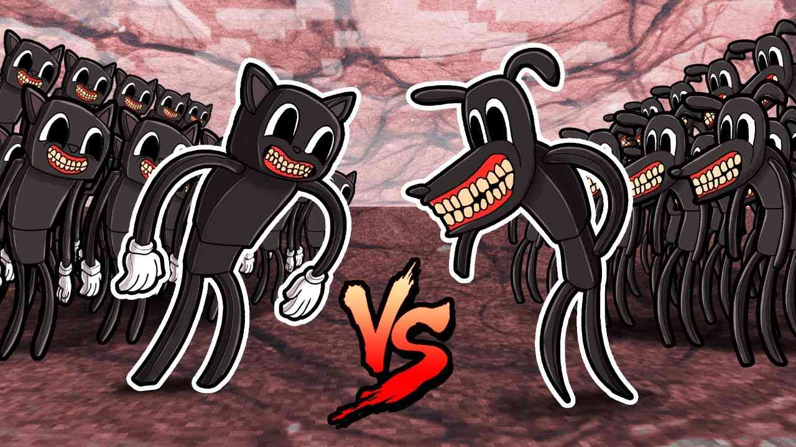
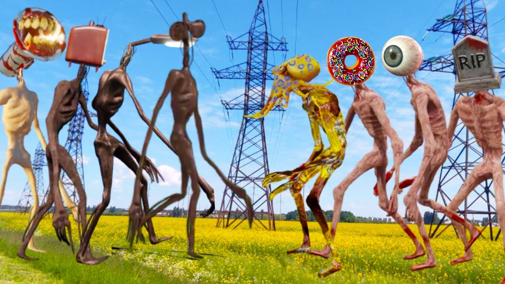

Монстры Трэвора Хэндерсона
Мой сын Владик очень любит монстров и хочет помочь мне выполнить домашнее задание.
Самые любимые его монстры - это те, которые придумал канадский художник Трэвор Хендерсон.
Библиотека монстров тут
Самый известный монстр - Сиреноголовый

Второй полюбившийся детям монстр - Поезд-пожиратель

Внутри поезда-пожирателя находится монстр.
Конечно же дома есть игрушки монстров Картун Кэт и Картун Дог (Cartoon cat & Cartoon Dog)

Другие ужастики, придуманые Хендерсоном:
- Перевернутая голова
- Большой Чарли
- Долговязая лошадь
- Великая мать Мегафон
- Нервозный гость
- Перевернутая голова
- Домоголовый
Фанатское творчество
Фанаты быстро придумали десятки новых существ по аналогии с Сиреноголовым, например:
- Светофороголовый
- Туалетоголовый
- Лампоголовый
- Фонареголовый
- Ухоголовый
- Телевизороголовый
